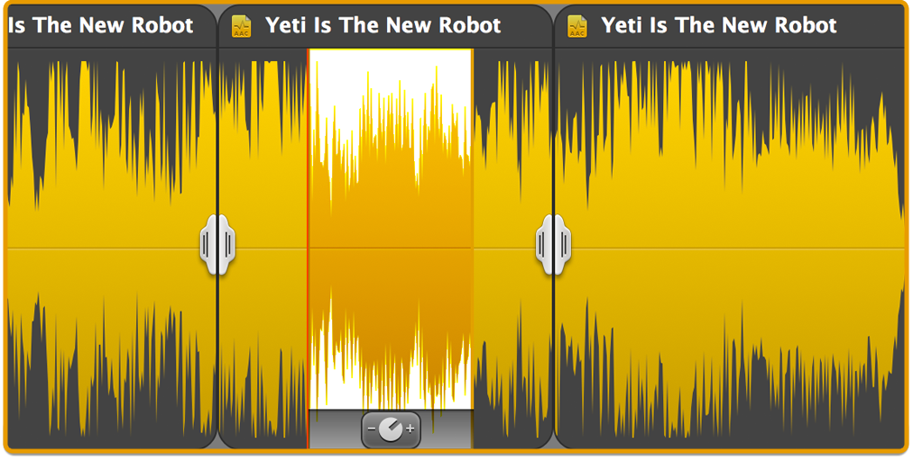
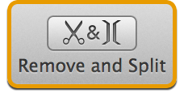
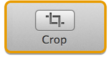
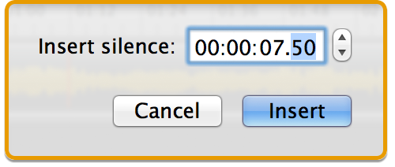

Removing and Adding Audio
Fission can be used to remove audio from a file, as well as add new audio.
Deleting Audio
Deleting audio is as easy as selecting and removing it. First, select the exact audio you wish to remove. You can tweak your selection by dragging either edge to increase or decrease the length. Alternately, the Set Selection option in the Tools menu will let you select an exact length of audio.

A selection of audio to be removed
Once the audio is selected, you can delete it by clicking the Remove button in the toolbar, or by selecting Remove from the Clip menu. The selected audio will then be removed from the file. If you wish to automatically add fades into and out of the removed point, turn on the Fade Around Removed Audio option in the Clip menu. For more details on fading, see the Fades and Volume Adjustments page for details.

Remove & Split button
You can also use the Remove and Split function in the Toolbar or Clip menu, to add a split point between two pieces of audio. For more on split points, see the Splitting Audio page.
Cropping Audio
Cropping audio is also very straightforward. First, select the audio you wish to keep. Remember that you can tweak a selection by dragging either edge to increase or decrease the length, or set an exact selection with the Set Selection option in the Tools menu.

The Crop Button
Once the exact selection is made, the audio can be cropped by clicking the Crop button in the toolbar, or choosing Crop from the Clip menu. All other audio will be removed, leaving you with only the selected audio.
Adding Audio
Audio can be added to a file in two ways. First, if you wish to simply join two (or more) files together, you can drag and drop a file from the Finder into an already-open audio file. The second file will be added to either the beginning or end of the open file (depending on where you drop) as a separate clip, so that it can be easily moved and manipulated. To merge the two clips together, just highlight the split point separating them, and delete it.
Two files can easily be joined into one
Audio can also be pasted in between audio files. With multiple audio files open, you can select audio from one file and copy it out using the Edit menu. Switch windows to the destination file, and paste it in where desired. The audio will be inserted wherever the playhead is currently located, as a separate clip. Again, to merge the two clips together, just highlight the split point separating them, and delete it.
Inserting Silence
Finally, Fission can add periods of silence to files, with the Insert Silence command. The Insert Silence sheet will appear:

With the settings seen above, 7.5 seconds of silence will be inserted where the playhead is currently located. Note that silence is added as a separate clip, so that it can be easily moved and manipulated. To merge the silence fully, just highlight the split points and delete them.